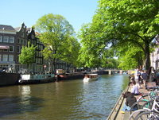
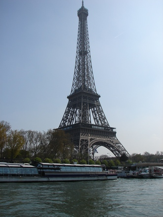
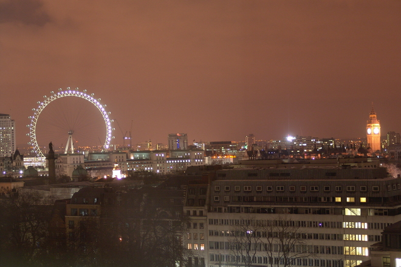
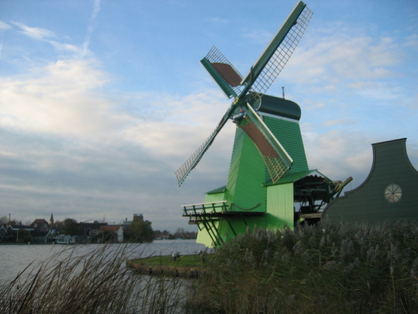
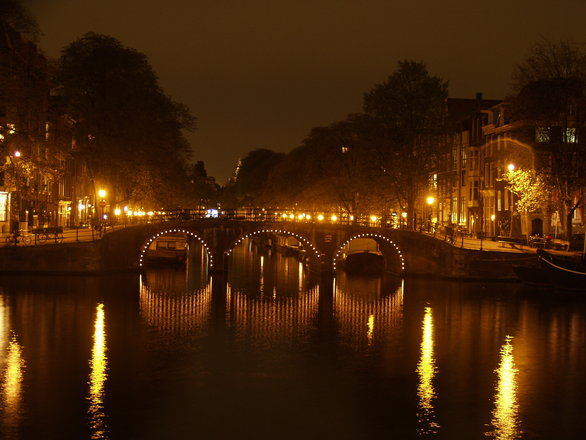

Londres , la ciudad de los mil rostros

Amsterdam, la ciudad del pecado
Nuestra vieja Europa
Desde esta página, vamos a visitar los rincones más bonitos del mundo sin necesidad de movernos de casa.
Van a ser lugares que, por diferentes razones, no van a trasmitir la esencia misma de sus gentes a través de sus calles, sus monumentos, sus ríos, etc.
En esta primera etapa os voy a presentar algunas de las ciudades más cosmopólitas de Europa y progresivamente iremos moviéndonos por todos los lugares del planeta.
Espero que disfrutéis navegando por esta página tanto como he disfrutado yo preparándola para vosotros.
Despegamos!!!!
Rincones para perderse
París, la ciudad del amor

París Oh la la la!!!
Quién ha estado enamorado y
no ha soñado alguna vez con pasear por
las calles de la ciudad del amor, de la mano de la persona querida.
Visitar la ciudad de día y la brillante ciudad que surge durante
la noche. Por algo también es llamada la ciudad de la luz.
París ha sido refugio de artistas he intelectuales
durante los últimos siglos
¿Cómo no va a atraparnos entre sus garras?
¿Cómo visitar París?
Podemos visitar la ciudad por nuestra cuenta,
ya que París es una ciudad con una extensa red de
comunicaciones. No obstante, podemos encontrar
numerosas empresas que organizan excursiones
para que no nos perdamos ninguno de sus
maravillosos rincones.
Mas información:
Ex
Londres y sus mil caras.
Podemos encontrar personas de cualquier raza, de cualquier nacionalidad,
ataviados con los atuendos típicos de sus países y a su vez perfectamente
integrados en el ambiente de esta gran ciudad.
¿Qué tiene Londres que acoge a todas las personas con los brazos abiertos?


La bucólica Holanda
No es necesario salir de Amsterdam para encontrar los paisajes campestres y los molinos que tanto caracterizan a Holanda. La misma ciudad con sus canales, sus bicicletas y su ritmo tienen cierto aire de vida relajada al margen de las prisas del resto de ciudades del mundo. Un bonito lugar en el que perderse y comenzar una nueva vida.
Y si todavía no sabes porque se la conoce como la ciudad del pecado puedes visitar el
en el cual las mujeres ejercen la prostitución libremente, ya que en Holanda este es un oficio reconocido.

Para realizar excursiones organizadas sigue el enlace:
Página siguiente -->
<-- Página anterior
Y al caer la tarde...
todo el mundo se reúne en torno a la cerveza a disfrutar de un rato de ocio en compañía de los colegas. Es la mejor manera de terminar una jornada y hasta existen empresas que organizan excursiones para tomar cervezas en los Pub más populares de Londres.
Más información: Excursiones Londres
<-- Página anterior
<-- Página anterior
Página siguiente-->